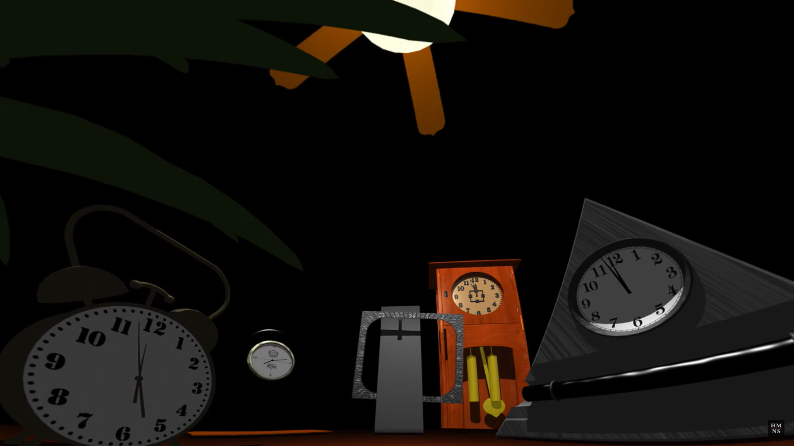
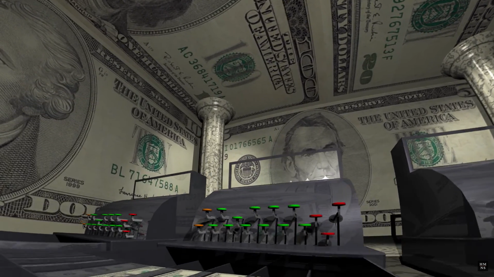
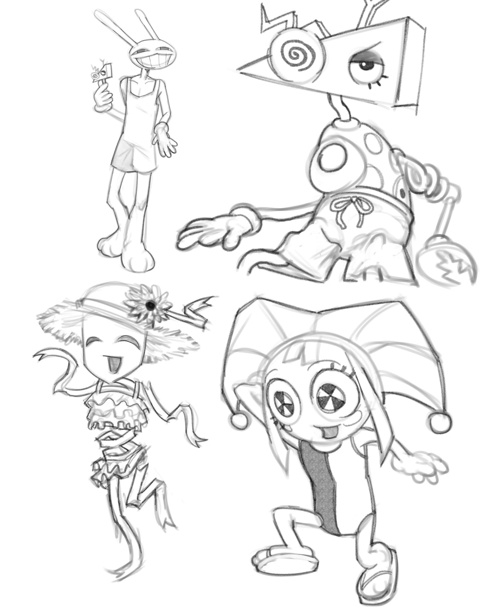
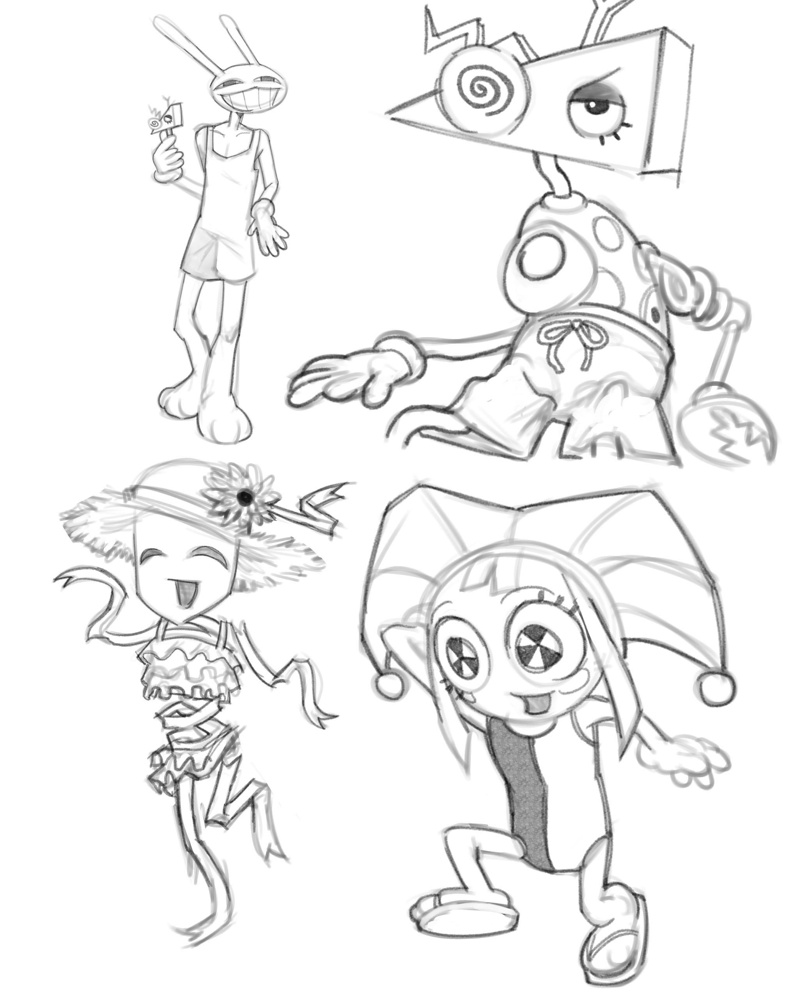

アメイジング
デジタル・サーカス
2023.10.13
Fanpage curated By TKR
Original Work By Gooseworx
A girl wakes up to a cacophany of tense color, adopted as part of an ensemble of circus game characters who lived in the ring.
They weren't non-playable characters, but humans who have fallen into the same virtual pitfall as her having trapped themselves into a VR headset. They barely remember much of their original human identity, forgetting their names upon arrival.

All means of mortal control filter into the hands of their game vessels; a walking polygon, a fragile ribbon, a resilient ragdolly, an amnesiac king, a toony bunny and so on...
TADC is an independent comedy visual webseries developed by Gooseworx about the absurdity of adult people living in an educational kid's game (reminiscent of 90's MS-DOS games) in complete isolation with nobody but an AI ringmaster with countless quests up his sleeves.
On 2025.09.07 I went to visit a childhood memory of mine; Pink Floyd's "The Dark Side Of The Moon" show [1, 2] at Burke Baker Planetarium. It's an album audiovisualizer designed specifically for planetarium screens so the Youtube teaser doesn't do any of it justice. It happens all year long at the Museum of Natural Sciences in Houston, TX.
Despite its local unpopularity this show was completely life-changing for me. To the regular visitor this can either be an obsolete computer animated show or the most sober balltripper that $12 can pay for, but I loved it for all of that.
This sequence of the show shows off just the power of the planetarium's immersion. It starts off with a pitch-black room of clocks chiming before landing the audience in a void of spinning planes with tiled clock textures.
A charming display of The Dawn Of CGI, as seen in complete immersion. This part of the show was the one that sent most people off to the exit because of how corny the visuals were. Where the show might fall flat is when it uses anything resembling real life stuff, but I have to admire the boldness of animating a dollar sign spinning and jumping around a hyperrealistic ballroom.
The shaders are pitch-black, many of the transitions are tacky or offpaced, and sometimes objects don't have textures. When they do, they're blown to scale in a way that the pixels can be counted on the big screen. However in the same show, you would be shot through loops of fractals until your head tilts, and skygazing as the horizon becomes submerged in black squares until there's nothing left. It's a perfect capsule of how the 90's was unapologetically and adamantly experimental. If you visit Houston, I recommend experiencing this or at least checking out the studio's website. And even if you don't care for nostalgia, it's still a really nice psychedelic event.
The art direction of TADC never falls short and I'm over the moon that people see value in older tech/aesthetics. The studio that animates TADC released a few promotional images that remind me plenty of the stock animations that play on bowling alley screens when you strike; if the entire series had the same black-value shaders and every surface looked glossier/dead, most obsolete tech enthusiasts like me would be thrilled! Besides that the shape language of each character warms my heart in a way that brings me back to my amateur days on Maya when I'd fuse geometry presets together to make my characters.
Funnybunny refers to the ship between Pomni and Jax.
I actually didn't think much of the pilot when it first came out. It teetered on an Invader Zim level of random humor that was comfortable enough to watch until followed by a few millenial-isms. Thankfully this is why shows have more than one episode to develop, and I ended up mildly invested.
Grounding the whole picture of Pomni's personality took a little bit of a span of over 4 episodes; the pilot didn't do much to explore her as a person as it stands to tell the workings (and inescapable fate) of the Digital Circus's macrocosm. Over the runtime she becomes more comfortable with her new life in the environment, and what solidified her as my favorite character was her assertion, emotional intelligence, and playful side displayed throughout episode 5 and 6.
Around August 2025, I went through and coped with a breakup.


 
